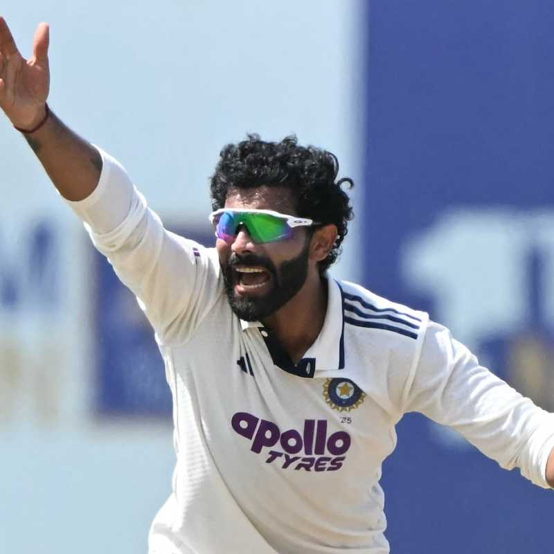

🔥 నో బాల్ పాపానికి ప్రాయశ్చిత్తం.. 131 బంతుల తర్వాత ధనంజయను అవుట్ చేసిన జడేజా!

శ్రీలంకతో జరుగుతున్న తొలి టెస్టులో టీమిండియా ఆల్రౌండర్ రవీంద్ర జడేజా ఓ ఆసక్తికరమైన ఘటనతో వార్తల్లో నిలిచాడు. నాలుగో రోజు చేసిన చిన్న తప్పిదానికి ఐదో రోజు తనదైన శైలిలో సమాధానం ఇచ్చాడు. నో బాల్ కారణంగా చేతుల నుంచి జారిపోయిన శ్రీలంక కెప్టెన్ ధనంజయ డి సిల్వాను.. ఏకంగా 131 బంతుల తర్వాత జడేజానే పెవిలియన్కు పంపించాడు. వికెట్ పడగానే జడేజా చూపించిన ఆవేశం, ఉపశమనం మైదానంలో ప్రత్యేక ఆకర్షణగా నిలిచాయి.
నో బాల్తో చేజారిన వికెట్
నాలుగో రోజు ఆటలో ధనంజయ డి సిల్వా కేవలం 9 పరుగుల వ్యక్తిగత స్కోరుతో ఉన్నాడు. ఆ సమయంలో జడేజా బౌలింగ్లో అతడికి వికెట్ దక్కాల్సిందే. కానీ జడేజా వేసిన బంతి నో బాల్గా మారడంతో ధనంజయకు అనూహ్యంగా జీవనాధారం లభించింది. ఓవర్స్టెప్ చేయడంతో వికెట్ రద్దయింది.
స్పిన్నర్గా జడేజా ఇలా నో బాల్స్ వేయడం చర్చనీయాంశంగా మారింది. ఈ టెస్టులోనే అతను నాలుగు నో బాల్స్ వేయడం భారత జట్టు మేనేజ్మెంట్కు కూడా ఆందోళన కలిగించే అంశంగా మారింది. ముఖ్యంగా కీలక సమయంలో వికెట్ దక్కినట్లే దక్కి చేజారిపోవడంతో జడేజాపై ఒత్తిడి మరింత పెరిగింది.

131 బంతుల తర్వాత సరిదిద్దుకున్న తప్పు
అయితే ఐదో రోజు జడేజా తన తప్పును మరచిపోలేదు. ధనంజయ బ్యాటింగ్ కొనసాగిస్తూ భారత బౌలర్లకు పరీక్షగా మారాడు. తనకు లభించిన అవకాశాన్ని పూర్తిగా ఉపయోగించుకున్న శ్రీలంక కెప్టెన్ అద్భుతంగా బ్యాటింగ్ చేశాడు.
చివరకు మ్యాచ్ 56వ ఓవర్లో జడేజాకు మరో అవకాశం వచ్చింది. ఈసారి బౌలింగ్ వేసేటప్పుడు క్రీజ్ను దాటకుండా ఎంతో జాగ్రత్తగా బంతిని సంధించాడు. ఫలితం వెంటనే కనిపించింది. ధనంజయ డి సిల్వా క్యాచ్ ఇచ్చి పెవిలియన్ చేరాడు. మానవ్ సుథార్ చేతికి క్యాచ్ వెళ్లడంతో జడేజా కీలక వికెట్ను తన ఖాతాలో వేసుకున్నాడు.
వికెట్ పడగానే జడేజా తీవ్ర ఆవేశంతో సంబరాలు చేసుకున్నాడు. భూమి వైపు ముఖం పెట్టి గట్టిగా అరుస్తూ తన ఆనందాన్ని, ఉపశమనాన్ని వ్యక్తం చేశాడు. ఆ క్షణం చూస్తే.. నాలుగో రోజు చేజారిన వికెట్కు ఐదో రోజు లెక్క సరిచేసుకున్నట్లుగా అనిపించింది.
ధనంజయతో భారత్కు పెరిగిన టెన్షన్
నో బాల్తో దక్కిన లైఫ్ను ధనంజయ వృథా చేయలేదు. సోనల్ దినుషాతో కలిసి భారీ భాగస్వామ్యాన్ని నెలకొల్పి భారత బౌలర్లపై ఒత్తిడి పెంచాడు. వీరిద్దరూ 202 బంతుల్లో 95 పరుగుల కీలక భాగస్వామ్యాన్ని నమోదు చేశారు.
ధనంజయ వ్యక్తిగతంగా 59 పరుగులు చేసి శ్రీలంక పోరాటాన్ని నిలబెట్టాడు. ముఖ్యంగా గాలే మైదానంలో అతడి రికార్డు భారత్కు మరింత ఆందోళన కలిగించే అంశం. ఈ వేదికపై అతడికి మంచి బ్యాటింగ్ రికార్డు ఉండటంతో పాటు గతంలోనూ కీలక ఇన్నింగ్స్లు ఆడాడు.
అందుకే ధనంజయ వికెట్ టీమిండియాకు ఎంతో కీలకంగా మారింది. అతడు క్రీజులో ఉన్నంతసేపూ మ్యాచ్పై శ్రీలంక ఆశలు సజీవంగానే కనిపించాయి. జడేజా అతడిని అవుట్ చేయడంతో భారత శిబిరంలో ఒక్కసారిగా ఊరట కనిపించింది.
వరుస వికెట్లతో భారత్ పట్టు
ధనంజయ డి సిల్వా వికెట్ పడిన తర్వాత శ్రీలంక బ్యాటింగ్ ఆర్డర్ ఒక్కసారిగా కుప్పకూలింది. జడేజా కీలక భాగస్వామ్యాన్ని విడదీసిన వెంటనే భారత బౌలర్లు మరింత దూకుడు పెంచారు.
ప్రసిద్ధ్ కృష్ణ బౌలింగ్లో డిక్వెల్లా కేవలం 10 పరుగులకే పెవిలియన్ చేరడంతో శ్రీలంకపై ఒత్తిడి మరింత పెరిగింది. దీంతో మ్యాచ్పై టీమిండియా పట్టు బిగించింది.
మొత్తానికి నాలుగో రోజు నో బాల్తో చేజారిన ధనంజయ వికెట్ను జడేజా ఐదో రోజు ఎట్టకేలకు సాధించాడు. 131 బంతుల నిరీక్షణకు తెరదించుతూ కీలక సమయంలో వికెట్ తీయడం ద్వారా తన తప్పిదానికి తానే ప్రాయశ్చిత్తం చేసుకున్నాడు. జడేజా సంబరాల్లో కనిపించిన ఆవేశం వెనుక.. నాలుగో రోజు జరిగిన పొరపాటు, ఐదో రోజు దాన్ని సరిదిద్దుకున్న సంతృప్తి రెండూ స్పష్టంగా కనిపించాయి.
← హోమ్ పేజీకి వెళ్లండి